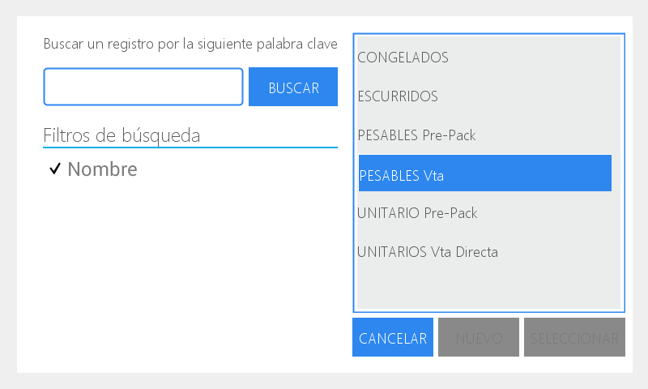
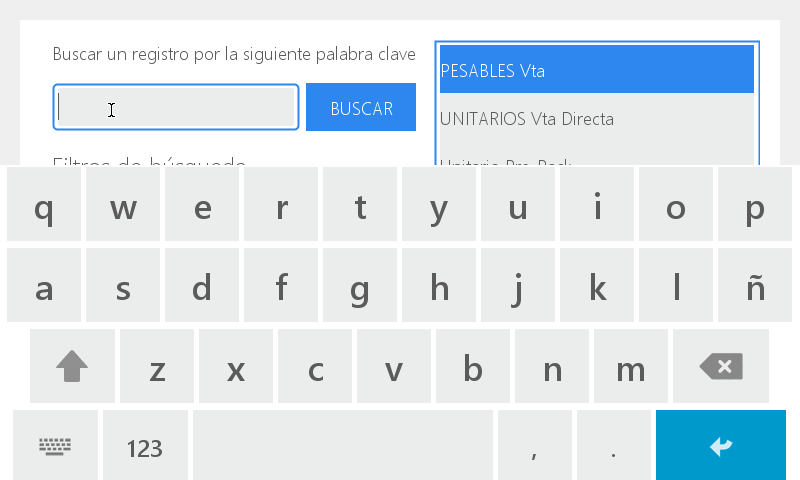
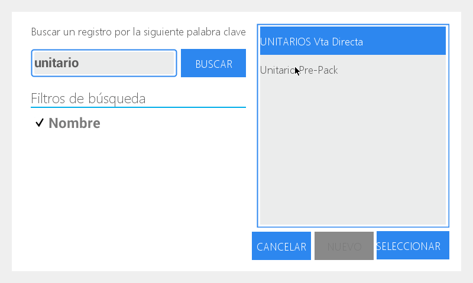
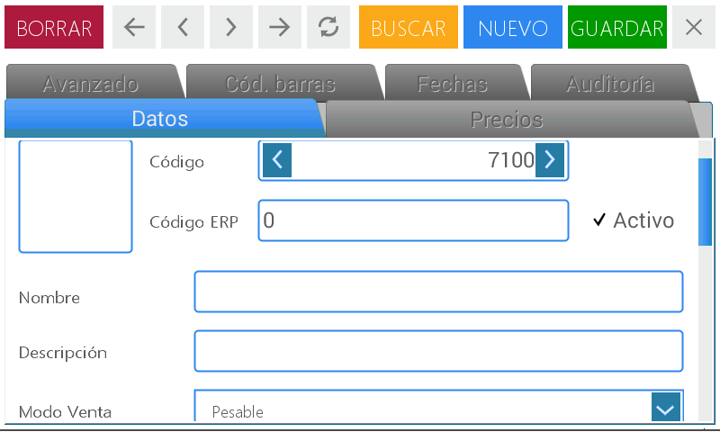

Frequently used actions
Before starting the description of how the equipment’s setting is done, we will detail some general frequently used actions.
To use the search menu
Press on the magnifying glass icon

In the right box you can see the detail that includes the search menu in accordance with the module where it is located.
Choose the one corresponding to the search you are going to execute

Press Select.
There is also an entry field available to make a registry search with a keyword.
In this case:
Press on the text box and then the Key to see the numeric keypad on the screen.

Write the word you are looking for and press Enter.
Then press Search and on the right quadrant you will see all the option that coincides with the entered keyword.

Choose the one you want and press Select.

To activate the entry field:
Press the box to enable the space for entering a text
Press the key to see the numeric keypad on the screen.

Press the letters to write or the key 123 to see the numeric keypad

Press Enter to confirm

Detachable menu
Press the arrow located in the right extreme of the box. In this way the detachable menu is enabled and it shows all the possibilities you have from the default setting of the equipment.

Select the one you need by pressing on it.

Field with arrows
To use the arrows:
Press the arrows located in the box’s extremes to increase the value (right arrow) or to decrease it (left arrow)
Enter the value with the numeric keypad:
Press the box to activate it.
Place the cursor behind the number and slide your finger to mark it.
Press clean. Enter the desired number with the scale’s numeric keypad.

+ icon
It allows you to access preexisting registries to make any modification:
Press the + icon
Press the entry field that is enabled
Press to enable the alphanumeric keypad and execute any necessary changes.
Then press save and close the working area.
X icon
It allows you to delete the selected data or registries to execute the action again.